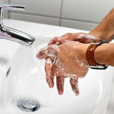
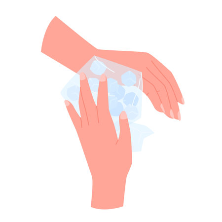

If someone gets bitten by a scorpion, here are the recommended first aid steps until they can receive medical attention:
1. Stay calm and reassure the victim. Scorpion stings are rarely life-threatening, but they can be painful.
2. Wash the affected area with soap and water to remove any remaining venom.

3. Apply a cold compress or ice pack wrapped in a thin towel to the sting site. This can help reduce swelling and pain.

4. Immobilize the affected limb and keep it below the level of the heart if possible. This can help slow the spread of venom.
5. Monitor the victim for signs of severe reaction, such as difficulty breathing, severe pain, muscle spasms, or slurred speech. These may indicate a more serious envenomation.
6. If the victim experiences any severe symptoms, call emergency services immediately.
7. Do not apply a tourniquet, make any incisions, or attempt to remove venom by suction, as these measures are ineffective and may cause further harm.
8. If the victim is stable, consider taking them to a hospital or medical facility for evaluation and possible treatment with antivenom, especially if the sting is from a highly venomous species.
9. Capture the scorpion safely, if possible, for identification purposes, as this can help with treatment.
10. Monitor the victim's vital signs (breathing, pulse, blood pressure) and keep them calm until medical help arrives.
The goal of first aid is to manage the symptoms, prevent the spread of venom, and seek prompt medical attention, especially for high-risk groups like children, the elderly, or those with underlying health conditions.